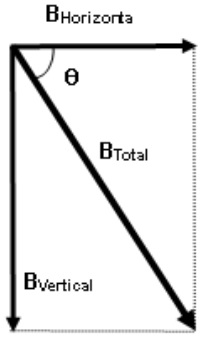

- Exploring the Magnetic Elements of Earth's Magnetic Field at the Equatorial Line in the Galapagos
The Magnetic Elements of Earth's Magnetic Field consist of the Angle of Inclination, \(\theta\) (also known as Dip Angle or Magnetic Dip),
the Angle of Declination, \(\phi\), and the Horizontal Component, \( B_{H} \), of the Earth's magnetic field.
These three elements are essential for fully describing Earth's magnetic field at a specific point. A simple relationships between variables is given by
\( B_{H} = B_{T} \: cos \theta \), where \( B_{T} \) represents the total earth's magnetic field at that point. To relate \(\phi\) to this system,
please check this lab
experiment (copied). By employing a spherical harmonic description within Maxwell's Equations,
where \( \nabla\cdot\vec{B} = 0 \) and \( \nabla \times \vec{H} = 0 \) (approximating the absence of
electric currents on Earth’s surface), and connecting scaler potential \(V \) as \( H = \nabla V \), along with Laplace's equation \( \nabla^{2} V = 0 \),
provides a comprehensive explanation of the problem.
For details, refer to the explanation provided
here.
space
Please follow the link1
and link2
to access various model problems from my introductory physics classroom related to the Earth's magnetism and Geophysics phenomena.
Additionally, please follow the
link3
to access the similar text problems that are more relevant to Geology and Ocean Science.
-
Magnetic Field Intensity Measurement: Use a handheld magnetometer or
a fluxgate magnetometer
to measure the intensity of the Earth's magnetic field at various locations along the equator.
-
Magnetic Dip Angle Measurement: Demonstrate horizontal component of Earth's Magnetic Field, Earth’s Total Magnetic Field, and Dip Angle.

Please click here
to access/explore a related experimental student project emphasizing on process-oriented and place-based inquiry learning.
Set up a compass needle and measure the angle of dip, which represents the angle between the direction of
the Earth's magnetic field lines and the horizontal plane. At the equator, the dip angle is close to zero, indicating that the magnetic field lines
are nearly parallel to the Earth's surface.
A student's version of this experiment conducted in Kahului, Maui, Hawaii, is here on these links:
setup and
results.
It includes how we did the experiment and what we found.
-
Equatorial Magnetometer Experiment:
Construct a simple magnetometer using a freely suspended magnetic needle or a magnetized needle mounted on a horizontal axis.
Observe the behavior of the magnetometer as it aligns itself with the horizontal component of the Earth's magnetic field at the equator.
-
Geomagnetic Storm Observation: Monitor geomagnetic disturbances, such as magnetic storms and substorms, which can occur at the equator due to interactions between
the solar wind and the Earth's magnetosphere. Use magnetometers and other instruments to detect fluctuations in the Earth's magnetic field during geomagnetic storms.
- Exploring the Galapagos at the Equator: A Water Experiment! Please click
here for a relevant demonstration.
Theory: \( \vec{F}_{cor} = -2m \: \vec{\omega} \times \vec{v} \)
Only 13 countries sit on the line around the middle of the Earth known as the equator. It divides the Earth into two hemispheres.
In one hemisphere, moving water is deflected to the right,
while in the other hemisphere, it is deflected to the left. What exactly causes this phenomenon? At the equator,
the earth's gravitational and rotational forces exhibit unique characteristics.
The Coriolis Effect is a phenomenon resulting from the Earth's rotation, and the equator provides an ideal location for observing this effect.
Galapagos, an island in Ecuador, which is in South America, is one of these countries!
The demo video originated from Uganda though. I am eager to conduct this experiment independently or
join locals in Ecuador if they offer museum setups for tourists to observe this fascinating phenomenon! (:
The coriolis force acting on a moving water can be mathematically
expressed as \( \vec{F}_{cor} = -2m \: \vec{\omega} \times \vec{v} \) where \( m \) is the mass of
the water, \(\omega\) is the angular velocity vector of the Earth's rotation, \( v \) is the velocity vector of the moving water. At the equator,
the Coriolis force acts perpendicular to the axis of Earth's rotation. Since the velocity vector \( v \) of
the draining water is downward (due to gravity), the Coriolis force will act horizontally.
In the Northern Hemisphere, the Coriolis force deflects moving water to the right,
while in the Southern Hemisphere, it deflects them to the left. Resultant Motion: As the water drains out of the container, the Coriolis force will cause
it to deflect either to the right (in the Northern Hemisphere) or to the left (in the Southern Hemisphere).
The magnitude of the deflection depends on factors such as the velocity of the draining water and the size of the container.
- Explain the direct impact of a meteoroid striking the Earth directly on the equator🥹
Storyline: A meteoroid impacts the Earth precisely at the equator. At the moment of impact, it descends vertically and directly downward.
Due to the impact, the time for the Earth to rotate once increases by 0.5 second, so the day is 0.5 second longer, undetectable to ordinary persons😑
After the impact, people on the Earth ignore the extra half-second each day and life goes on as normal.
When you attempt to solve this problem, you can assume that the Earth has the same density all over. Why is the above situation impossible?
If the time increases by half a second because of the impact, what will happen to human life? Will life continue as usual? When you figure out the answer,
you'll be surprised to see
how our lives depend on tiny moments! In fact, our lives on Earth are delicately balanced, like standing on the edge of a cliff!
Please click
here for my scientist's explanation.
- Exploring the line itself that marks the equator
Please click here
for relevant discussions
In Galapagos, Ecuador, the El Mitad del Mundo monument, marked by a prominent yellow line, is commonly mistaken for the true location of the equator.
However, it is widely recognized that this monument is not accurate. Employees at the site direct visitors to another location a few hundred meters away,
believed to be the "true" equator based on more precise GPS measurements. Despite this, some independent travelers argue that neither site is accurate,
highlighting the ongoing need for scientific clarification regarding the exact position of the equatorial line in Galapagos.
Are there any other effective methods to confirm the exact equator line?
- Flat-Earth Friends or Round World!
Please click here for relevant concept
To help flat-earth believers/friends understand that the world is actually round, consider engaging in the following five straightforward experiments. One:
You can watch a ship disappear over the horizon. As it sails away, you'll notice the bottom of the ship disappearing first, showing the curvature of the Earth.
Two: You can observe a lunar eclipse. During this event, the Earth casts a round shadow on the moon, proving its round shape.
Three: Take a flight from one place to another. If you pay attention, you'll notice that the flight path often curves instead of going straight.
This is because the shortest distance between two points on a sphere is a curved line.
Four: Notice the changing constellations as you travel north or south. Different stars become visible as you move away from the equator, proving that Earth is spherical.
Five: Observe a sunset from a high vantage point, such as a mountain or a tall building. Notice how the sun appears to sink below the horizon, disappearing from view.
This happens because the Earth's curvature causes the sun to gradually disappear from your line of sight.
These experiments are easy to do and offer clear evidence that the Earth is not flat.
- Balancing an Egg at the Equator
Please click here
for relevant concept
Balancing an egg on the equator involves placing an egg upright on its end on a flat surface at the Earth's equatorial line.
Due to the Earth's rotation and the gravitational forces acting at the equator, it is said that the egg can be balanced more easily than at other latitudes.
This phenomenon is often demonstrated as a fun and quirky activity, showcasing the unique properties of the Earth's equatorial region.
- Sun-Kissed Physics: Bringing More Sunscreen to the Equator is Essential
What is Equatorial Sun Safety? What is the Physics Behind Bringing More Sunscreen?
As indicated in our cruise preparation guidelines for packing, the equator experiences very strong sun due to
its direct path straight down through the atmosphere, unlike the longer angled path observed elsewhere.